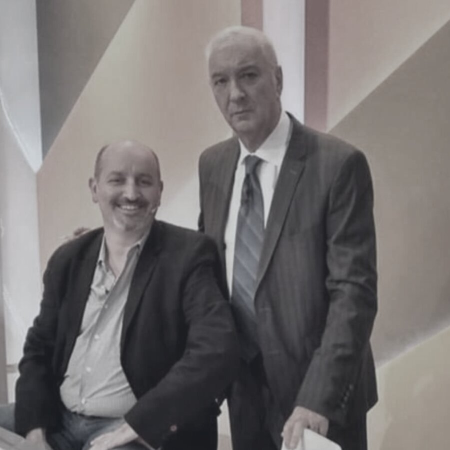
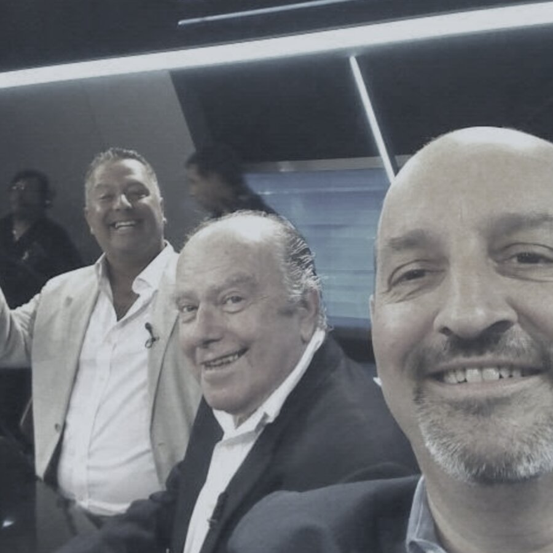

33 años defendiendo causas de todo tipo de complejidad — homicidios, abuso sexual, violaciones, robo, usurpación y delitos federales — en CABA, Buenos Aires, Fuero Federal y todo el país.
 Referente del estudio
Referente del estudio
Desde causas simples hasta las de mayor complejidad. Elegí un tipo de causa para ver cómo trabajamos.
Defensa técnica y estrategia procesal desde el primer momento de la investigación en causas por homicidio, tentativa de homicidio y figuras agravadas. También representamos como parte querellante a las familias de la víctima, con acompañamiento durante todo el proceso.
Consultar por esta causaPatrocinio con máxima reserva y sensibilidad, tanto en la defensa del imputado como en el patrocinio a la víctima que decide denunciar. Evaluamos la prueba, las pericias y la estrategia procesal más adecuada para cada etapa de la causa.
Consultar por esta causaDefensa en causas por robo, hurto, daños y usurpación de inmuebles, desde el inicio de la investigación hasta la resolución del proceso. Incluye acciones de desalojo y reivindicación cuando el conflicto involucra la posesión de un inmueble.
Consultar por esta causaAsesoramiento y patrocinio en causas de violencia de género y familiar, tanto en el fuero penal como en las medidas de protección conexas. Actuamos con la celeridad que estos casos requieren.
Consultar por esta causaDefensa en causas de competencia federal — narcotráfico, contrabando y delitos económicos — con conocimiento de la dinámica propia de este fuero y de sus tiempos procesales.
Consultar por esta causaPresentaciones para obtener la libertad durante el proceso apenas se dan las condiciones legales, y evaluación de salidas alternativas como la probation o el juicio abreviado cuando convienen a los intereses del imputado.
Consultar por esta causaPatrocinio a la parte damnificada en causas penales de cualquier tipo, desde la constitución como querellante hasta el juicio oral, para que la víctima tenga una voz activa y no solo la de la fiscalía.
Consultar por esta causaImpugnación de resoluciones ante instancias superiores cuando corresponde revisar una decisión judicial — desde autos de procesamiento hasta sentencias de juicio oral.
Consultar por esta causaEl resultado de un proceso judicial depende de las circunstancias particulares de cada caso. Este resumen es ilustrativo del tipo de trabajo que hacemos y no constituye garantía de resultado.
Los primeros minutos son decisivos. Esto es lo que conviene hacer — y lo que conviene evitar — mientras nos contactás.
Es un derecho constitucional, no un obstáculo para la causa. Nada te obliga a responder antes de tener asesoramiento.
Ni de tu celular ni de tu computadora, sin asesoramiento previo — aunque te lo pidan con insistencia.
Citaciones, actas de allanamiento, constancias — no descartes nada, aunque parezca menor.
Atendemos urgencias las 24 horas — el primer contacto puede hacerse desde acá mismo.
Evaluemos tu caso Referente del estudio
Referente del estudio
Abogado penalista con 33 años de ejercicio profesional ininterrumpido (desde 1992), en causas de todo tipo de complejidad en CABA, Buenos Aires, Fuero Federal y todo el país. Es convocado con frecuencia por distintos medios — América 24, Canal 22, Crónica y radios — para analizar la actualidad penal. Fue el abogado defensor del "Hacker Camus" y participó en la defensa de causas de amplia repercusión pública. Se especializa en defensas penales de delitos de distinto grado de gravedad.

Derecho penal y principal responsable del área de Derecho Civil.

Más de 30 años de ejercicio del derecho, mediadora y principal responsable de la sección de Infracciones de Tránsito.
El Dr. José Luis España es consultado con frecuencia por distintos medios — América 24, Canal 22, Crónica y radios — para analizar la actualidad penal. Participó en la defensa de causas de amplia repercusión pública y fue defensor del "Hacker Camus".


Detrás de cámara, en distintos pisos de TV
Respuestas claras a las preguntas más habituales sobre derecho penal. ¿Tenés otra? Escribinos →
Ante cualquier citación, denuncia, allanamiento o detención. Cuanto antes se haga la consulta, más opciones de estrategia quedan disponibles — esperar suele achicar el margen de maniobra.
Sí, es un derecho constitucional. No declarar no implica reconocer nada ni perjudica por sí solo el desarrollo del proceso.
Ambos ejercen la defensa técnica. Un abogado particular de tu elección permite un seguimiento directo y personalizado del caso, con contacto continuo desde el primer momento.
Sí. Actuamos como parte querellante en causas por homicidio, abuso sexual, violaciones y otros delitos, patrocinando a la víctima o a sus familiares desde la denuncia hasta el juicio.
Vías de contacto disponibles con el estudio.